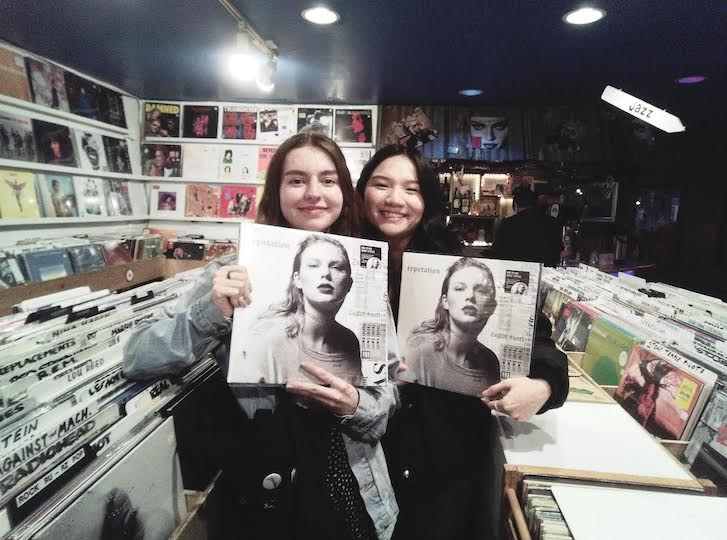

I love listening to music and there is nothing more fun to me than going to concerts.
Although it is an expensive hobby, I feel like collecting vinyl is a great way to appreciate an artist and their music. My best friend, who is also my roommate, and I have over 150 records combined displayed in our living room.
